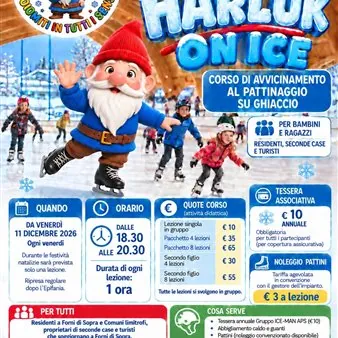

ven 11 dic · dalle 18:30
Harluk on ice
Corso di avvicinamento al pattinaggio su ghiaccio.
 Indicazioni
Indicazioni
- Costi e prenotazioni
- Costo non indicato · Prenotazione non indicata
- Programma
- Programma da verificare. Apri la fonte ufficiale per orari e possibili aggiornamenti.
- In caso di maltempo
- Nessuna indicazione specifica pubblicata.
- Note
- Acquisito automaticamente dalla fonte.
L’EVENTO
Descrizione completa
Corso di avvicinamento al pattinaggio su ghiaccio, per bambini e ragazzi.
Il Gruppo ICEMAN APS prepara l’inverno con “Harluk on Ice”: un corso di avvicinamento al pattinaggio aperto a residenti e turisti, per vivere la montagna attraverso il movimento, l’amicizia e la scoperta.
Tra le novità c’è la possibilità di partecipare a una singola lezione, sempre in gruppo, senza dover acquistare necessariamente un pacchetto. Una formula pensata anche per le famiglie che soggiornano in paese soltanto per pochi giorni e desiderano arricchire la vacanza con un’attività sportiva.
Le lezioni inizieranno venerdì 11 dicembre 2026 , alla pista di pattinaggio di Forni di Sopra, e proseguiranno ogni venerdì nella fascia oraria 18:30–20:30 . Ogni lezione durerà un’ora e si svolgerà in gruppo. Durante le festività natalizie è prevista una sola lezione, con ripresa regolare dopo l’Epifania.
TARIFFE
La quota per una lezione singola è di 10 euro;
quattro lezioni 35 euro;
otto lezioni 65 euro.
Per il secondo figlio le quote sono rispettivamente di 30 e 55 euro.
È richiesta la tessera annuale del Gruppo ICEMAN APS, del costo di 10 euro, per chi non è già tesserato, necessaria per la copertura assicurativa.
Il noleggio convenzionato dei pattini costa 3 euro a lezione.
Se le condizioni meteorologiche impediranno l’avvio o la prosecuzione del corso, le lezioni pagate e non svolte saranno recuperate nelle settimane successive. Qualora il recupero non fosse possibile, verrà rimborsato l’importo delle lezioni non effettuate.
IL PROGRAMMA
Programma e orari
Appuntamenti raccolti dalle fonti elencate. Dove manca un orario, non è ancora disponibile in questa scheda.
Programma pubblicato
- 18:30–20:30
INFORMAZIONI UTILI
Prima di partire
- Controllare la fonte prima di partire.
ORGANIZZAZIONE